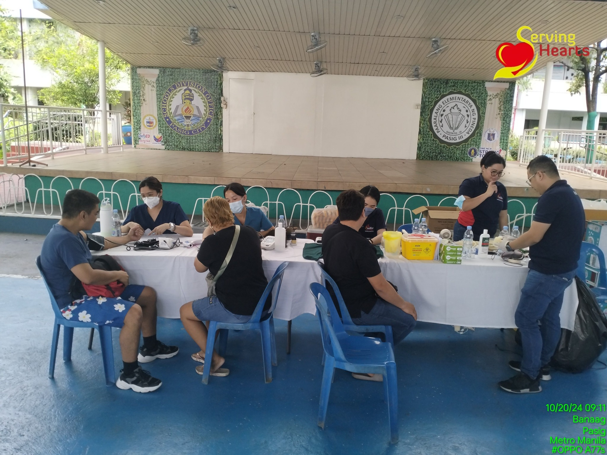

The GIFT of BLOOD is the GIFT of LIFE
Heartfelt thanks to all blood donors for giving the gift of life.

We are thrilled to report the success of the bloodletting activity held on October 27, 2024, at the Multipurpose Hall, Pasig Bliss Village III, Westbank Road, Brgy. Maybunga, Pasig City. The event took place from 8:00 AM to 2:00 PM and received an overwhelming response from the local community.
Thanks to the dedication of our donors and volunteers, this life-saving event provided essential blood supplies that will help save numerous lives. We are especially grateful to all the donors who generously contributed their blood to support this critical cause.
A heartfelt thank you to everyone involved in making this event a success. Your participation is crucial in helping others and making a real difference in our community.
For those who were unable to join us, we look forward to your support in future bloodletting drives as we continue our mission of saving lives through blood donation.